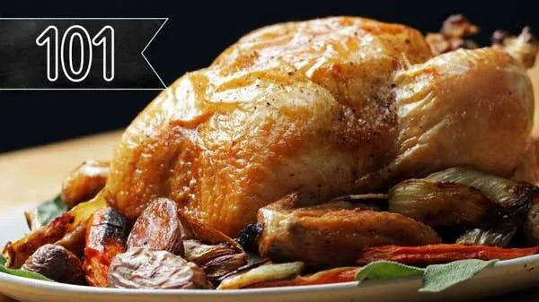

Roast Chicken

Steal the show with this amazing roast chicken recipe.
Ingredients
- 4lb whole chicken
- kosher salt, to taste
- ground black pepper, to taste
Directions
- Remove the giblets from the chicken cavity. pat the chicken dry all over with paper towels, including the cavity.
- Generously season the entire chicken with salt and pepper. With the tip of a toothpick, poke the skin of the chicken all over, creating at least 20 tiny holes.
- Transfer chicken to a rimmed baking dish and let sit in the refrigerator, uncovered, for 8-12 hours.
- Preheat the oven to 450 degrees Fahrenheit.
- Remove chicken from refrigerator and let it warm to room temp for 1 hour.
- Truss the chicken legs using butcher's twine, tie the legs together, then slip the twine under each leg, pull up to the top of the chicken, and flip the bird over. Pull the twine under the wings, loop around the neck, and then tie to secure and cut off any excess twine. Flip the bird over again and tuck the wings under the breast.
- Set the chicken, breast-side up, on a roasting rack set over a pan
- Roast for 1 hour, or until a meat thermometer inserted in the thickest part of the chicken reaches 165 degrees Fahrenheit.
- Let the chicken rest at room temperature for 20 minutes.
- To carve, remove the twine. Using a sharp knife, cut between the leg and the breast. When you reach the joint, bend it back and cut right through. Twist off the wings. To remove the breasts, cut straight down along the keel bone. Then, angling your knife outward, remove the breast. Break the legs down into thighs and drumsticks, if desired. Pull off the oysters from the underside of the chicken.
- If you’d like, make chicken stock from the carcass. Add the carcass to a large pot with onions, celery, carrots, garlic, and other aromatics of your choice. Cover with water and bring to a boil over high heat. Reduce the heat to low and simmer for about 8 hours, skimming off the fat as needed. Store in the fridge for a few days or freeze for a few months.
- Enjoy.